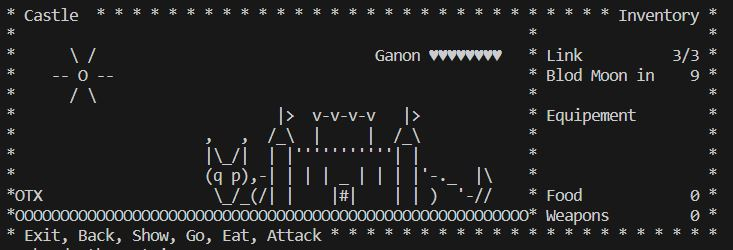

Tutorial
Inicio
En este juego para poder moverte o interactuar con el mapa tendras que usar linias de comando en un terminal.
Pondrás elegir el nombre que quieras poner, siempre y cuando no se a más de 10 caracteres. Si no pones nada automáticamente pondrá Link como nombre.
Mapas
Tendrás 5 mapas las cuales podrás moverte libre mente sin ninguna restricción, podrás ir a Hyrule, Gerudo, Necluda, Death Mountain y Castle, en este último estaría Ganon al cual sería el boss final.
Hyrule
Gerudo
Necluda
Death Mountain
Castle
Interaciones
En los diferentes mapas quitando "Castle" hay diferentes objetos o seres para interactuar:
-
X: el personaje, para moverte tiene dos maneras, una es "go left x", "go right x", "go up x" o "go down x", la cual x es las casillas que te quieres mover, si en la casilla que te quieres mover no puedes estar te quedaras en tu sitio sin moverte, y la otra manera es eligiendo directamente al lugar que quieres ir las cuales solo puedes usarlos con los árboles, zorros, santuarios y agua por ejemplo "go by the F" y también sirve para moverte por los mapas "go to Hyrule".
-
Espacios en blanco: el césped se puede atacar con una espada esribiendo "attack", un 10% de los golpes te dará un lagarto, un 90% de los golpes no dará nada. El lagarto te aumentará 1 de carne.
-
O: son piedras, el personaje no puede acceder.
-
C: son cocinas, a su lado el personaje puede cocinar si pones "cook ..." y lo que quieres cocinar, lo cual solo puedes cocinar una ensalada "salad" (necesitas 2 vegetales), pescatarian "pescatarian" (necesitas 1 pez y 1 vegetal) y un rostizado "roasted" (necesitas 1 de carne y 1 de vegetal).
-
T: un árbol se le pede atacar esribiendo "attack" sin tener la espada cargada, el cual te puede dar una espada de madera, escudo de madera, una manzana o nada, pero así no se destruye. Sin embargo si cargas una espada de metal tendrás más posibilidades de conseguir algo, pero después de 4 golpes se destruye y hasta dentro de 10 turnos vuelve aparecer.
-
~: al lado del agua se puede pescar esribiendo "fish" el 20% de las veces se obtiene un pez, si lo consigues no puedes conseguir otro pez hasta que salgas y vuelvas al mismo mapa.
-
F: el zorro sólo son visibles un 50% de las veces que el personaje accede en esa área. Si ves al zorro te puedes poner a su lado y atacarle esribiendo "attack" el cual te dara 1 de carne

-
SX o SX?: El interrogante sólo aparece si el santuario no está abierto. Para abrir un santuario es necesario ponerse al lado y escribir "Open sanctuary". Cundo lo habrás te aumentará 1 vida máxima que puedes tener.

-
M o W: es un cofre que "M" es si está cerrado y "W" si está abierto, para abrirlo es necesario ponerse al lado y escribir "Open chest", y dependiendo en que mapa estés te dará un objeto u otro, en Hyrule y Gerudo te dará una espadan, y en Deat Mountain y Necluda te dará un escudo.
-
Ex: es un enemigo en la cual x es la vida que tiene. Le podrás pegar esribiendo "attack" si estas al lado poniendo "attack", al atacarle si a un le queda vida el enemigo se moverá a un sitio random de una casilla.
Batalla final
Cuando estas en el castillo el movimiento cambia ya solo puedes moverte de izquierda a derecha, para salir tienes que escribir "back", si te acercas a Ganon recibes uno de daño y si lo atacas esribiendo "attack" también. Si te vas del castillo Ganon recupera toda la vida.